循环神经网络(RNN)
人们的每次思考并不都是从零开始的。比如说你在阅读这篇文章时，你基于对前面的文字的理解来理解你目前阅读到的文字，而不是每读到一个文字时，都抛弃掉前面的思考，从头开始。你的记忆是有持久性的。
传统的神经网络并不能如此，这似乎是一个主要的缺点。例如，假设你在看一场电影，你想对电影里的每一个场景进行分类。传统的神经网络不能够基于前面的已分类场景来推断接下来的场景分类。
循环神经网络(Recurrent Neural Networks)解决了这个问题。这种神经网络带有环，可以将信息持久化。

在上图所示的神经网络\(A\)中，输入为\(X_t\)，输出为\(h_t\)。\(A\)上的环允许将每一步产生的信息传递到下一步中。环的加入使得RNN变得神秘。不过，如果你多思考一下的话，其实RNN跟普通的神经网络也没有那么不同。一个RNN可以看作是同一个网络的多份副本，每一份都将信息传递到下一个副本。如果我们将环展开的话：
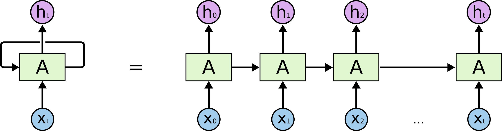
这种链式结构展示了RNN与序列和列表的密切关系。RNN的这种结构能够非常自然地使用这类数据。而且事实的确如此。在过去的几年里，RNN在一系列的任务中都取得了令人惊叹的成就，比如语音识别，语言建模，翻译，图片标题等等。关于RNN在各个领域所取得的令人惊叹的成就，参见这篇文章。
LSTM是这一系列成功中的必要组成部分。LSTM(Long Short Term Memory)是一种特殊的循环神经网络，在许多任务中，LSTM表现得比标准的RNN要出色得多。几乎所有基于RNN的令人赞叹的结果都是LSTM取得的。本文接下来将着重介绍LSTM。
长期依赖(Long Term Dependencies)的问题
RNN的一个核心思想是将以前的信息连接到当前的任务中来，例如，通过前面的视频帧来帮助理解当前帧。如果RNN真的能够这样做的话，那么它们将会极其有用。但是事实真是如此吗？未必。
有时候，我们只需要看最近的信息，就可以完成当前的任务。比如，考虑一个语言模型，通过前面的单词来预测接下来的单词。如果我们想预测句子“the clouds are in the sky”中的最后一个单词，我们不需要更多的上下文信息——很明显下一个单词应该是sky。在这种情况下，当前位置与相关信息所在位置之间的距离相对较小，RNN可以被训练来使用这样的信息。
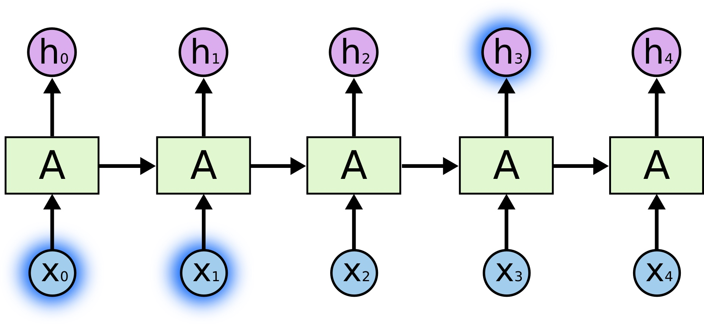
然而，有时候我们需要更多的上下文信息。比如，我们想预测句子“I grew up in France… I speak fluent French”中的最后一个单词。最近的信息告诉我们，最后一个单词可能是某种语言的名字，然而如果我们想确定到底是哪种语言的话，我们需要France这个更远的上下文信息。实际上，相关信息和需要该信息的位置之间的距离可能非常的远。
不幸的是，随着距离的增大，RNN对于如何将这样的信息连接起来无能为力。
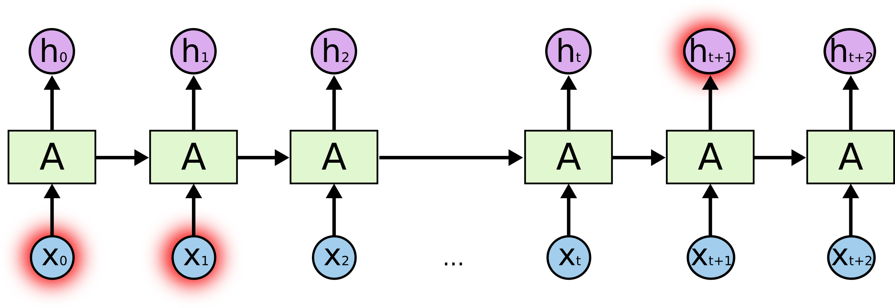
理论上说，RNN是有能力来处理这种长期依赖(Long Term Dependencies)的。人们可以通过精心调参来构建模型处理一个这种玩具问题(Toy Problem)。不过，在实际问题中，RNN并没有能力来学习这些。Hochreiter (1991) German更深入地讲了这个问题，Bengio, et al. (1994)发现了RNN的一些非常基础的问题。
幸运的是，LSTM并没有上述问题！
LSTM网络
LSTM，全称为长短期记忆网络(Long Short Term Memory networks)，是一种特殊的RNN，能够学习到长期依赖关系。LSTM由Hochreiter & Schmidhuber (1997)提出，许多研究者进行了一系列的工作对其改进并使之发扬光大。LSTM在许多问题上效果非常好，现在被广泛使用。
LSTM在设计上明确地避免了长期依赖的问题。记住长期信息是小菜一碟！所有的循环神经网络都有着重复的神经网络模块形成链的形式。在普通的RNN中，重复模块结构非常简单，例如只有一个tanh层。
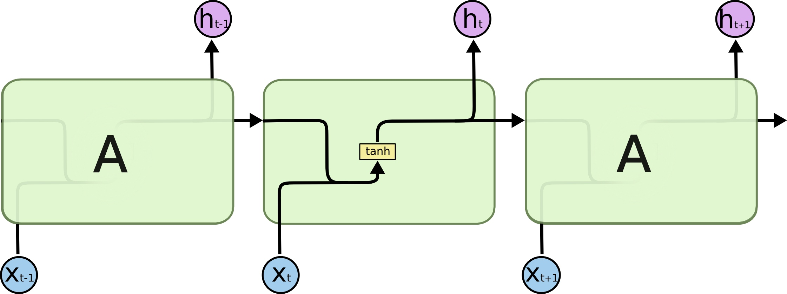
LSTM也有这种链状结构，不过其重复模块的结构不同。LSTM的重复模块中有4个神经网络层，并且他们之间的交互非常特别。
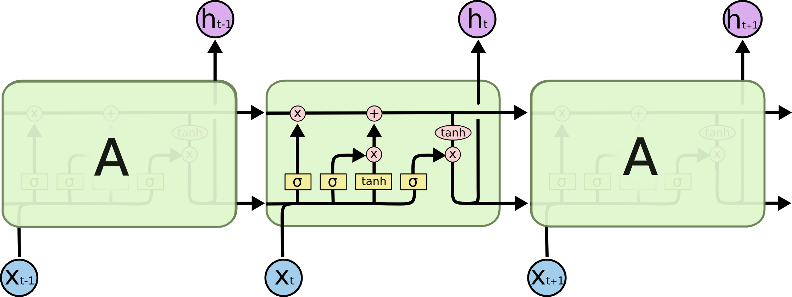
现在暂且不必关心细节，稍候我们会一步一步地对LSTM的各个部分进行介绍。开始之前，我们先介绍一下将用到的标记。
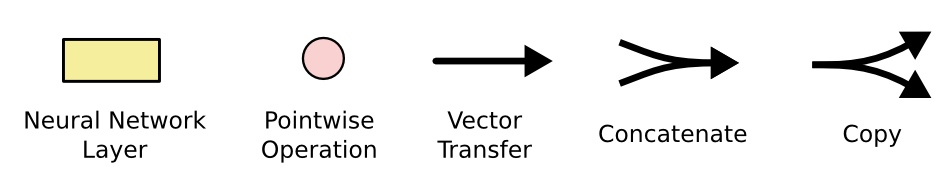
在上图中，每条线表示向量的传递，从一个结点的输出传递到另外结点的输入。粉红圆表示向量的元素级操作，比如相加或者相乘。黄色方框表示神经网络的层。线合并表示向量的连接，线分叉表示向量复制。
LSTM核心思想
LSTM的关键是元胞状态(Cell State)，下图中横穿整个元胞顶部的水平线。
元胞状态有点像是传送带，它直接穿过整个链，同时只有一些较小的线性交互。上面承载的信息可以很容易地流过而不改变。
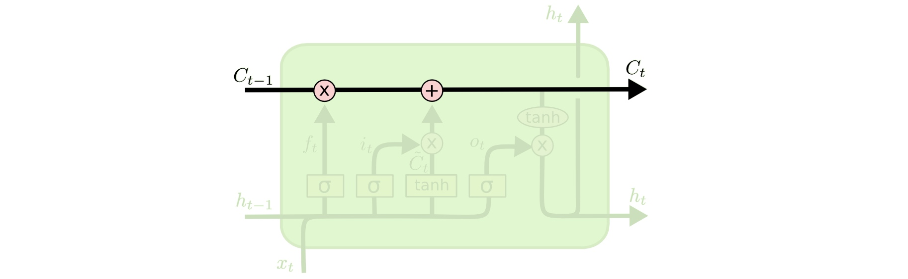
LSTM有能力对元胞状态添加或者删除信息，这种能力通过一种叫门的结构来控制。
门是一种选择性让信息通过的方法。它们由一个Sigmoid神经网络层和一个元素级相乘操作组成。
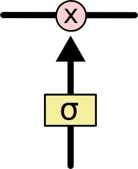
Sigmoid层输出0~1之间的值，每个值表示对应的部分信息是否应该通过。0值表示不允许信息通过，1值表示让所有信息通过。一个LSTM有3个这种门，来保护和控制元胞状态。
LSTM分步详解
LSTM的第一步是决定我们将要从元胞状态中扔掉哪些信息。该决定由一个叫做“遗忘门(Forget Gate)”的Sigmoid层控制。遗忘门观察\(h_{t-1}\)和\(x_t\)，对于元胞状态\(C_{t-1}\)中的每一个元素，输出一个0~1之间的数。1表示“完全保留该信息”，0表示“完全丢弃该信息”。
回到之前的预测下一个单词的例子。在这样的一个问题中，元胞状态可能包含当前主语的性别信息，以用来选择正确的物主代词。当我们遇到一个新的主语时，我们就需要把旧的性别信息遗忘掉。
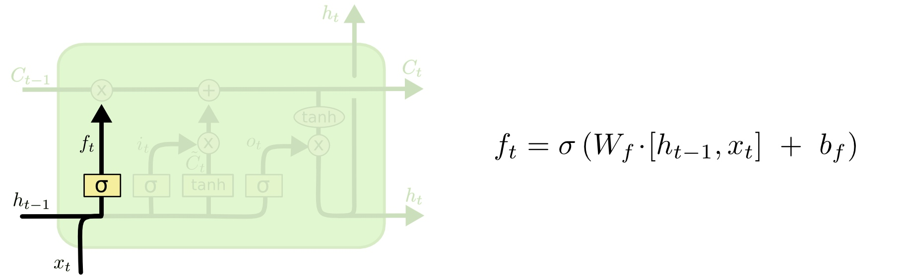
下一步是决定我们将会把哪些新信息存储到元胞状态中。这步分为两部分。首先，有一个叫做“输入门(Input Gate)”的Sigmoid层决定我们要更新哪些信息。接下来，一个tanh层创造了一个新的候选值，\(\tilde{C_t}\)，该值可能被加入到元胞状态中。在下一步中，我们将会把这两个值组合起来用于更新元胞状态。
在语言模型的例子中，我们可能想要把新主语的性别加到元胞状态中，来取代我们已经遗忘的旧值。
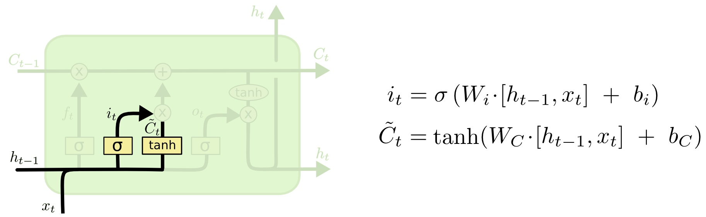
现在我们该更新旧元胞状态\(C_{t-1}\)到新状态\(C_t\)了。上面的步骤中已经决定了该怎么做，这一步我们只需要实际执行即可。
我们把旧状态\(C_{t-1}\)乘以\(f_t\)，忘掉我们已经决定忘记的内容。然后我们再加上\(i_t * \tilde{C_t}\)，这个值由新的候选值（\(\tilde{C_t}\)）乘以候选值的每一个状态我们决定更新的程度（\(i_t\)）构成。
还是语言模型的例子，在这一步，我们按照之前的决定，扔掉了旧的主语的性别信息，并且添加了新的信息。
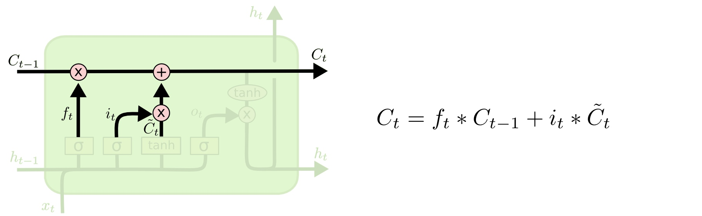
最后，我们需要决定最终的输出。输出将会基于目前的元胞状态，并且会加入一些过滤。首先我们建立一个Sigmoid层的输出门(Output Gate)，来决定我们将输出元胞的哪些部分。然后我们将元胞状态通过tanh之后（使得输出值在-1到1之间），与输出门相乘，这样我们只会输出我们想输出的部分。
对于语言模型的例子，由于刚刚只输出了一个主语，因此下一步可能需要输出与动词相关的信息。举例来说，可能需要输出主语是单数还是复数，以便于我们接下来选择动词时能够选择正确的形式。
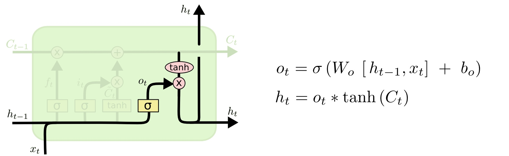
LSTM的变种
本文前面所介绍的LSTM是最普通的LSTM，但并非所有的LSTM模型都与前面相同。事实上，似乎每一篇paper中所用到的LSTM都是稍微不一样的版本。不同之处很微小，不过其中一些值得介绍。
一个流行的LSTM变种，由Gers & Schmidhuber (2000)提出，加入了“窥视孔连接(peephole connection)”。也就是说我们让各种门可以观察到元胞状态。
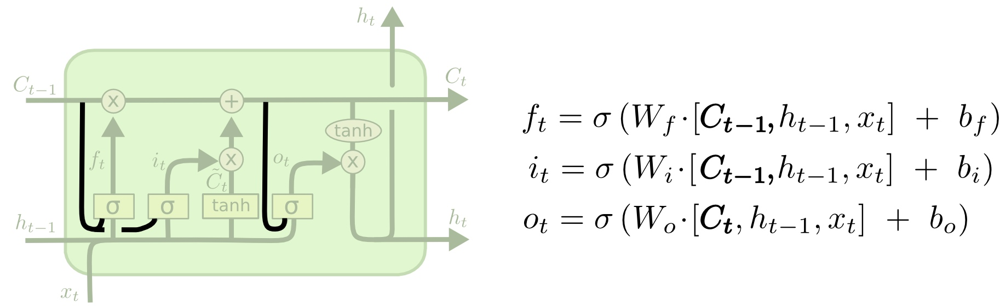
上图中，对于所有的门都加入了“窥视孔”，不过也有一些paper中只加一部分。
另一种变种是使用对偶的遗忘门和输入门。我们不再是单独地决定需要遗忘什么信息，需要加入什么新信息；而是一起做决定：我们只会在需要在某处放入新信息时忘记该处的旧值；我们只会在已经忘记旧值的位置放入新值。
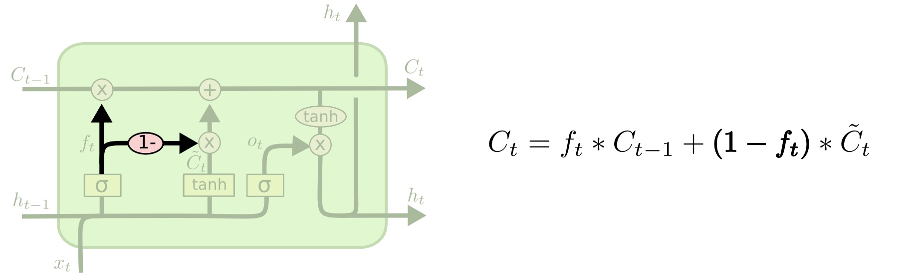
另一个变化更大一些的LSTM变种叫做Gated Recurrent Unit，或者GRU，由Cho, et al. (2014)提出。GRU将遗忘门和输入门合并成为单一的“更新门(Update Gate)”。GRU同时也将元胞状态(Cell State)和隐状态(Hidden State)合并，同时引入其他的一些变化。该模型比标准的LSTM模型更加简化，同时现在也变得越来越流行。
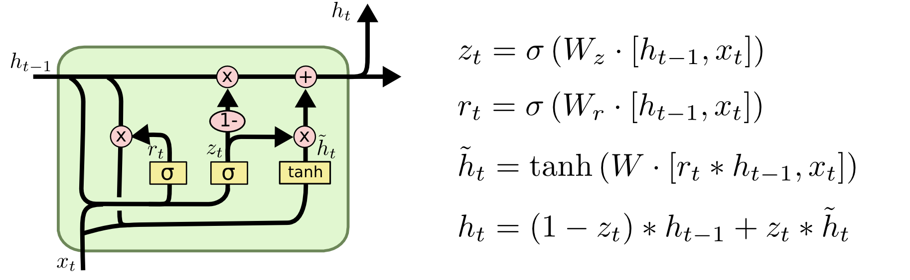
另外还有很多其他的模型，比如Yao, et al. (2015)提出的Depth Gated RNNs。同时，还有很多完全不同的解决长期依赖问题的方法，比如Koutnik, et al. (2014)提出的Clockwork RNNs。
不同的模型中哪个最好？这其中的不同真的有关系吗？Greff, et al. (2015)对流行的变种做了一个比较，发现它们基本相同。Jozefowicz, et al. (2015)测试了一万多种RNN结构，发现其中的一些在特定的任务上效果比LSTM要好。
结论
前文中，我提到了人们使用RNN所取得的出色的成就。本质上，几乎所有的成就都是由LSTM取得的。对于大部分的任务，LSTM表现得非常好。
由于LSTM写在纸上是一堆公式，因此看起来很吓人。希望本文的分步讲解能让读者更容易接受和理解。
LSTM使得我们在使用RNN能完成的任务上迈进了一大步。很自然，我们会思考，还会有下一个一大步吗？研究工作者们的共同观点是：“是的！还有一个下一步，那就是注意力(Attention)！”注意力机制的思想是，在每一步中，都让RNN从一个更大的信息集合中去选择信息。举个例子，假如你使用RNN来生成一幅图片的说明文字，RNN可能在输出每一个单词时，都会去观察图片的一部分。事实上，Xu, et al.(2015)做的正是这个工作！如果你想探索注意力机制的话，这会是一个很有趣的起始点。现在已经有很多使用注意力的令人兴奋的成果，而且似乎更多的成果马上将会出来……
注意力并不是RNN研究中唯一让人兴奋的主题。举例说，由Kalchbrenner, et al. (2015)提出的Grid LSTM似乎极有前途。在生成式模型中使用RNN的工作——比如Gregor, et al. (2015)、Chung, et al. (2015)以及Bayer & Osendorfer (2015)——看起来也非常有意思。最近的几年对于RNN来说是一段非常令人激动的时间，接下来的几年也必将更加使人振奋！
致谢
我非常感谢大家帮助我更好的理解LSTM，给可视化提建议，以及提供这篇文章的反馈。
我非常感谢我的Google的同事们，他们提了很有帮助的建议。特别是Oriol Vinyals，Greg Corrado，Jon Shlens，Luke Vilnis，以及Ilya Sutskever。我也非常感谢许多其他的朋友和同事们拿出时间来帮助我，包括Dario Amodei和Jacob Steinhardt。特别要感谢Kyunghyun Cho对我的图表提出的深思熟虑的建议。
在写这篇文章之前，我在我所授课的两学期关于神经网络的课程上练习讲授了LSTM。感谢所有的参与者对我的耐心以及反馈。